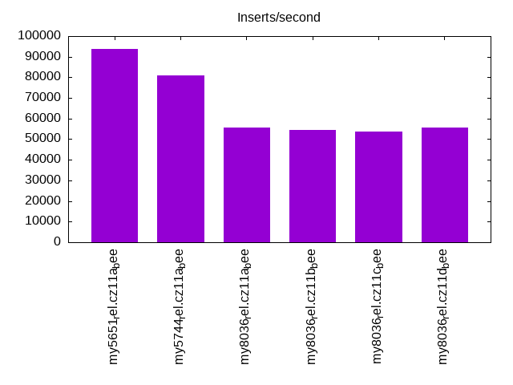
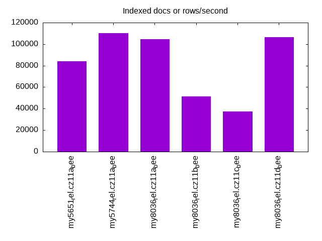
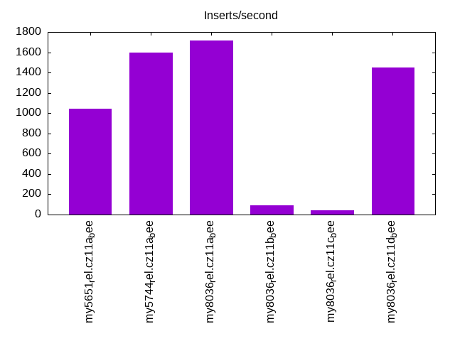
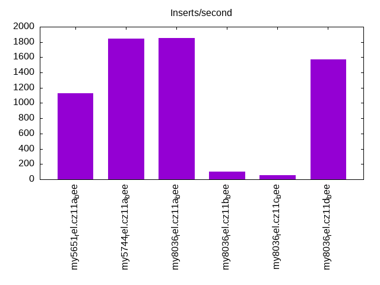
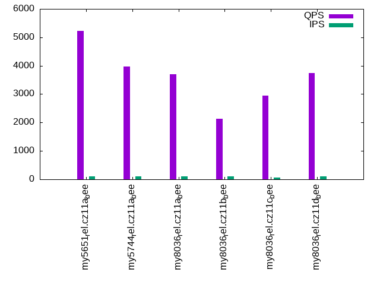
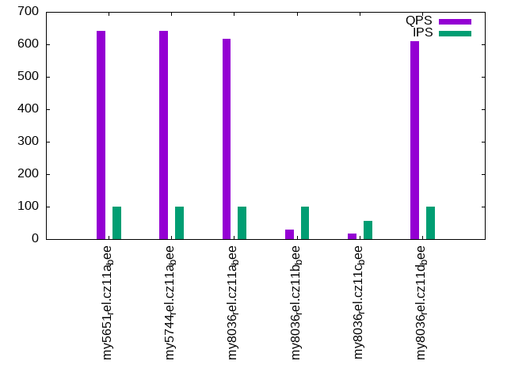
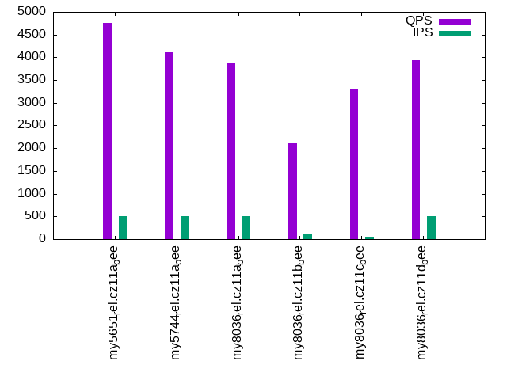
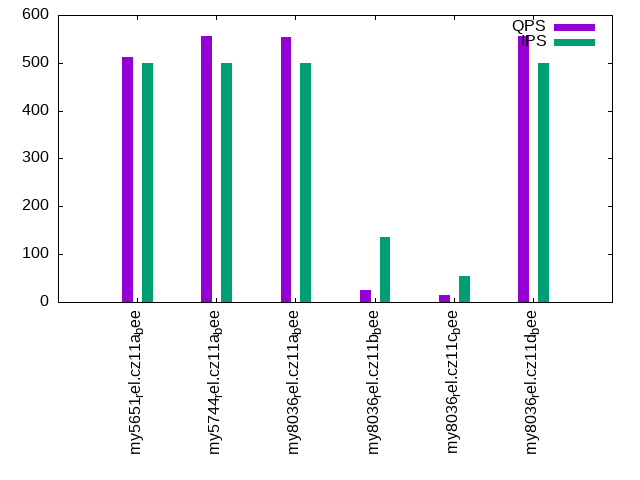
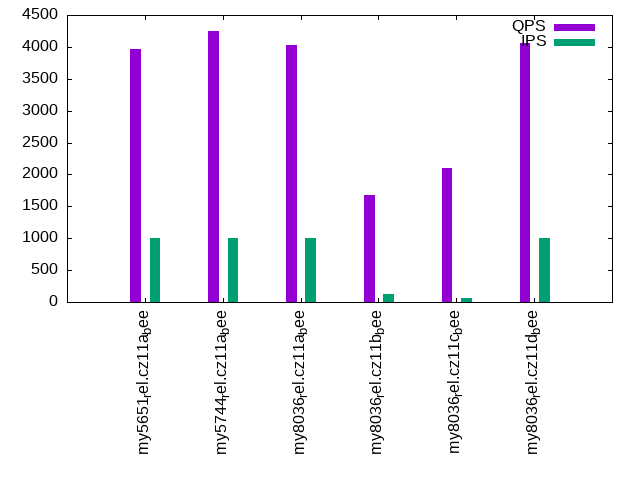
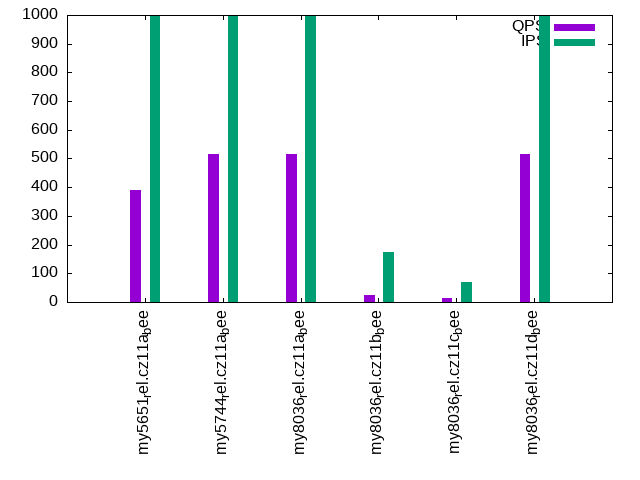

This is a report for the insert benchmark with 800M docs and 1 client(s). It is generated by scripts (bash, awk, sed) and Tufte might not be impressed. An overview of the insert benchmark is here and a short update is here. Below, by DBMS, I mean DBMS+version.config. An example is my8020.c10b40 where my means MySQL, 8020 is version 8.0.20 and c10b40 is the name for the configuration file.
The test server has 8 AMD cores, 16G RAM and an NVMe SSD. It is described here as the Beelink. The benchmark was run with 1 client and there were 1 or 3 connections per client (1 for queries or inserts without rate limits, 1+1 for rate limited inserts+deletes). It uses 1 table. It loads 800M rows per table without secondary indexes, creates 3 secondary indexes per table, then inserts 4m+1m rows per table with a delete per insert to avoid growing the table. It then does 6 read+write tests for 1800s each that do queries as fast as possible with 100,100,500,500,1000,1000 inserts/s and the same for deletes/s per client concurrent with the queries. The database is larger than memory. Clients and the DBMS share one server. The per-database configs are in the per-database subdirectories here.
The tested DBMS are:
The numbers are inserts/s for l.i0, l.i1 and l.i2, indexed docs (or rows) /s for l.x and queries/s for qr100, qp100 thru qr1000, qp1000" The values are the average rate over the entire test for inserts (IPS) and queries (QPS). The range of values for IPS and QPS is split into 3 parts: bottom 25%, middle 50%, top 25%. Values in the bottom 25% have a red background, values in the top 25% have a green background and values in the middle have no color. A gray background is used for values that can be ignored because the DBMS did not sustain the target insert rate. Red backgrounds are not used when the minimum value is within 80% of the max value.
| dbms | l.i0 | l.x | l.i1 | l.i2 | qr100 | qp100 | qr500 | qp500 | qr1000 | qp1000 |
|---|---|---|---|---|---|---|---|---|---|---|
| my5651_rel.cz11a_bee | 93930 | 84034 | 1043 | 1132 | 5230 | 641 | 4758 | 512 | 3974 | 391 |
| my5744_rel.cz11a_bee | 81004 | 110026 | 1596 | 1842 | 3976 | 642 | 4118 | 556 | 4254 | 515 |
| my8036_rel.cz11a_bee | 55559 | 104657 | 1715 | 1855 | 3694 | 616 | 3891 | 554 | 4033 | 514 |
| my8036_rel.cz11b_bee | 54663 | 51533 | 94 | 102 | 2141 | 29 | 2103 | 26 | 1672 | 25 |
| my8036_rel.cz11c_bee | 53540 | 37568 | 45 | 56 | 2949 | 16 | 3312 | 15 | 2099 | 14 |
| my8036_rel.cz11d_bee | 55811 | 106256 | 1450 | 1575 | 3736 | 610 | 3929 | 557 | 4066 | 515 |
This table has relative throughput, throughput for the DBMS relative to the DBMS in the first line, using the absolute throughput from the previous table. Values less than 0.95 have a yellow background. Values greater than 1.05 have a blue background.
| dbms | l.i0 | l.x | l.i1 | l.i2 | qr100 | qp100 | qr500 | qp500 | qr1000 | qp1000 |
|---|---|---|---|---|---|---|---|---|---|---|
| my5651_rel.cz11a_bee | 1.00 | 1.00 | 1.00 | 1.00 | 1.00 | 1.00 | 1.00 | 1.00 | 1.00 | 1.00 |
| my5744_rel.cz11a_bee | 0.86 | 1.31 | 1.53 | 1.63 | 0.76 | 1.00 | 0.87 | 1.09 | 1.07 | 1.32 |
| my8036_rel.cz11a_bee | 0.59 | 1.25 | 1.64 | 1.64 | 0.71 | 0.96 | 0.82 | 1.08 | 1.01 | 1.31 |
| my8036_rel.cz11b_bee | 0.58 | 0.61 | 0.09 | 0.09 | 0.41 | 0.05 | 0.44 | 0.05 | 0.42 | 0.06 |
| my8036_rel.cz11c_bee | 0.57 | 0.45 | 0.04 | 0.05 | 0.56 | 0.02 | 0.70 | 0.03 | 0.53 | 0.04 |
| my8036_rel.cz11d_bee | 0.59 | 1.26 | 1.39 | 1.39 | 0.71 | 0.95 | 0.83 | 1.09 | 1.02 | 1.32 |
This lists the average rate of inserts/s for the tests that do inserts concurrent with queries. For such tests the query rate is listed in the table above. The read+write tests are setup so that the insert rate should match the target rate every second. Cells that are not at least 95% of the target have a red background to indicate a failure to satisfy the target.
| dbms | qr100.L1 | qp100.L2 | qr500.L3 | qp500.L4 | qr1000.L5 | qp1000.L6 |
|---|---|---|---|---|---|---|
| my5651_rel.cz11a_bee | 100 | 100 | 499 | 499 | 999 | 999 |
| my5744_rel.cz11a_bee | 100 | 100 | 499 | 499 | 998 | 999 |
| my8036_rel.cz11a_bee | 100 | 100 | 499 | 499 | 998 | 999 |
| my8036_rel.cz11b_bee | 99 | 99 | 104 | 136 | 132 | 173 |
| my8036_rel.cz11c_bee | 70 | 55 | 57 | 55 | 62 | 70 |
| my8036_rel.cz11d_bee | 100 | 100 | 499 | 499 | 998 | 998 |
| target | 100 | 100 | 500 | 500 | 1000 | 1000 |
l.i0: load without secondary indexes. Graphs for performance per 1-second interval are here.
Average throughput:
Insert response time histogram: each cell has the percentage of responses that take <= the time in the header and max is the max response time in seconds. For the max column values in the top 25% of the range have a red background and in the bottom 25% of the range have a green background. The red background is not used when the min value is within 80% of the max value.
| dbms | 256us | 1ms | 4ms | 16ms | 64ms | 256ms | 1s | 4s | 16s | gt | max |
|---|---|---|---|---|---|---|---|---|---|---|---|
| my5651_rel.cz11a_bee | 74.997 | 24.857 | 0.087 | 0.057 | 0.002 | 0.186 | |||||
| my5744_rel.cz11a_bee | 0.274 | 99.376 | 0.207 | 0.141 | 0.002 | 0.109 | |||||
| my8036_rel.cz11a_bee | 99.423 | 0.431 | 0.145 | 0.001 | 0.105 | ||||||
| my8036_rel.cz11b_bee | 99.391 | 0.461 | 0.147 | 0.001 | 0.106 | ||||||
| my8036_rel.cz11c_bee | 99.316 | 0.517 | 0.156 | 0.011 | 0.143 | ||||||
| my8036_rel.cz11d_bee | 99.423 | 0.440 | 0.136 | 0.001 | 0.098 |
Performance metrics for the DBMS listed above. Some are normalized by throughput, others are not. Legend for results is here.
ips qps rps rmbps wps wmbps rpq rkbpq wpi wkbpi csps cpups cspq cpupq dbgb1 dbgb2 rss maxop p50 p99 tag 93930 0 822 3.2 467.1 33.9 0.009 0.035 0.005 0.369 11816 22.6 0.126 19 52.6 68.1 10.7 0.186 93891 80258 my5651_rel.cz11a_bee 81004 0 0 0.0 413.3 29.3 0.000 0.000 0.005 0.371 8816 21.6 0.109 21 52.6 68.1 10.9 0.109 81207 73915 my5744_rel.cz11a_bee 55559 0 0 0.0 338.7 21.0 0.000 0.000 0.006 0.388 6659 20.5 0.120 30 52.4 68.0 11.1 0.105 55637 51740 my8036_rel.cz11a_bee 54663 0 0 0.0 384.0 20.7 0.000 0.000 0.007 0.389 6999 21.9 0.128 32 52.4 68.0 11.1 0.106 54766 49831 my8036_rel.cz11b_bee 53540 0 0 0.0 294.4 20.4 0.000 0.000 0.005 0.390 7689 22.9 0.144 34 52.4 68.0 11.1 0.143 53865 46647 my8036_rel.cz11c_bee 55811 0 0 0.0 340.3 21.1 0.000 0.000 0.006 0.388 6691 20.8 0.120 30 52.4 68.0 11.1 0.098 55838 52444 my8036_rel.cz11d_bee
l.x: create secondary indexes.
Average throughput:
Performance metrics for the DBMS listed above. Some are normalized by throughput, others are not. Legend for results is here.
ips qps rps rmbps wps wmbps rpq rkbpq wpi wkbpi csps cpups cspq cpupq dbgb1 dbgb2 rss maxop p50 p99 tag 84034 0 561 84.9 712.8 107.6 0.007 1.035 0.008 1.312 1871 11.3 0.022 11 111.4 126.9 10.8 0.002 NA NA my5651_rel.cz11a_bee 110026 0 694 110.5 978.3 131.2 0.006 1.028 0.009 1.221 6285 12.0 0.057 9 121.1 136.7 11.0 0.002 NA NA my5744_rel.cz11a_bee 104657 0 1759 166.5 2132.7 149.7 0.017 1.629 0.020 1.465 8548 44.1 0.082 34 120.7 136.3 11.2 0.005 NA NA my8036_rel.cz11a_bee 51533 0 865 82.0 1142.0 73.8 0.017 1.629 0.022 1.467 4238 24.7 0.082 38 120.7 136.3 11.2 0.004 NA NA my8036_rel.cz11b_bee 37568 0 508 59.8 806.7 53.8 0.014 1.631 0.021 1.468 3774 18.8 0.100 40 120.7 136.3 10.5 0.004 NA NA my8036_rel.cz11c_bee 106256 0 1783 169.1 2168.6 152.1 0.017 1.629 0.020 1.465 8771 45.0 0.083 34 120.7 136.3 11.2 0.004 NA NA my8036_rel.cz11d_bee
l.i1: continue load after secondary indexes created with 50 inserts per transaction. Graphs for performance per 1-second interval are here.
Average throughput:
Insert response time histogram: each cell has the percentage of responses that take <= the time in the header and max is the max response time in seconds. For the max column values in the top 25% of the range have a red background and in the bottom 25% of the range have a green background. The red background is not used when the min value is within 80% of the max value.
| dbms | 256us | 1ms | 4ms | 16ms | 64ms | 256ms | 1s | 4s | 16s | gt | max |
|---|---|---|---|---|---|---|---|---|---|---|---|
| my5651_rel.cz11a_bee | 0.020 | 83.817 | 16.156 | 0.006 | 0.856 | ||||||
| my5744_rel.cz11a_bee | 12.376 | 81.244 | 6.379 | 0.001 | 0.337 | ||||||
| my8036_rel.cz11a_bee | 17.226 | 77.665 | 5.109 | 0.221 | |||||||
| my8036_rel.cz11b_bee | 0.001 | 12.666 | 37.305 | 33.399 | 16.628 | 0.001 | 4.160 | ||||
| my8036_rel.cz11c_bee | 0.134 | 5.463 | 65.012 | 24.436 | 4.955 | 8.926 | |||||
| my8036_rel.cz11d_bee | 0.020 | 93.076 | 6.904 | 0.201 |
Delete response time histogram: each cell has the percentage of responses that take <= the time in the header and max is the max response time in seconds. For the max column values in the top 25% of the range have a red background and in the bottom 25% of the range have a green background. The red background is not used when the min value is within 80% of the max value.
| dbms | 256us | 1ms | 4ms | 16ms | 64ms | 256ms | 1s | 4s | 16s | gt | max |
|---|---|---|---|---|---|---|---|---|---|---|---|
| my5651_rel.cz11a_bee | 42.083 | 57.520 | 0.394 | 0.003 | 0.001 | 0.675 | |||||
| my5744_rel.cz11a_bee | 96.539 | 3.205 | 0.254 | 0.003 | 0.085 | ||||||
| my8036_rel.cz11a_bee | 51.446 | 48.204 | 0.347 | 0.003 | 0.096 | ||||||
| my8036_rel.cz11b_bee | 49.480 | 11.056 | 16.476 | 22.940 | 0.039 | 0.009 | 1.388 | ||||
| my8036_rel.cz11c_bee | 11.891 | 16.086 | 26.258 | 45.634 | 0.097 | 0.034 | 2.735 | ||||
| my8036_rel.cz11d_bee | 81.332 | 16.731 | 1.936 | 0.166 |
Performance metrics for the DBMS listed above. Some are normalized by throughput, others are not. Legend for results is here.
ips qps rps rmbps wps wmbps rpq rkbpq wpi wkbpi csps cpups cspq cpupq dbgb1 dbgb2 rss maxop p50 p99 tag 1043 0 6636 103.2 9477.9 256.1 6.362 101.336 9.085 251.392 42005 17.2 40.265 1319 143.9 159.4 10.4 0.856 1049 749 my5651_rel.cz11a_bee 1596 0 10052 157.1 12160.0 388.2 6.300 100.803 7.621 249.126 63416 24.3 39.747 1218 144.5 160.0 10.7 0.337 1599 899 my5744_rel.cz11a_bee 1715 0 8853 138.3 13267.1 368.2 5.162 82.587 7.735 219.837 74754 23.6 43.584 1101 149.5 165.3 10.8 0.221 1648 899 my8036_rel.cz11a_bee 94 0 594 9.3 1050.5 23.7 6.298 100.771 11.140 257.803 25297 6.0 268.256 5090 143.9 159.5 10.8 4.160 50 0 my8036_rel.cz11b_bee 45 0 277 4.9 597.8 11.3 6.215 112.397 13.403 260.002 24161 3.1 541.729 5561 143.9 159.5 10.5 8.926 50 0 my8036_rel.cz11c_bee 1450 0 9139 142.8 13289.5 363.1 6.304 100.858 9.166 256.468 70515 21.2 48.638 1170 143.9 159.5 10.7 0.201 1498 949 my8036_rel.cz11d_bee
l.i2: continue load after secondary indexes created with 5 inserts per transaction. Graphs for performance per 1-second interval are here.
Average throughput:
Insert response time histogram: each cell has the percentage of responses that take <= the time in the header and max is the max response time in seconds. For the max column values in the top 25% of the range have a red background and in the bottom 25% of the range have a green background. The red background is not used when the min value is within 80% of the max value.
| dbms | 256us | 1ms | 4ms | 16ms | 64ms | 256ms | 1s | 4s | 16s | gt | max |
|---|---|---|---|---|---|---|---|---|---|---|---|
| my5651_rel.cz11a_bee | 2.140 | 54.455 | 42.459 | 0.945 | 0.001 | 0.077 | |||||
| my5744_rel.cz11a_bee | 4.120 | 82.502 | 12.923 | 0.454 | 0.063 | ||||||
| my8036_rel.cz11a_bee | 3.010 | 90.628 | 5.804 | 0.557 | 0.059 | ||||||
| my8036_rel.cz11b_bee | 0.402 | 23.755 | 13.065 | 33.832 | 27.488 | 1.459 | 0.813 | ||||
| my8036_rel.cz11c_bee | 0.170 | 3.970 | 6.892 | 41.760 | 41.867 | 5.197 | 0.144 | 1.729 | |||
| my8036_rel.cz11d_bee | 0.001 | 93.521 | 5.389 | 1.085 | 0.003 | 0.088 |
Delete response time histogram: each cell has the percentage of responses that take <= the time in the header and max is the max response time in seconds. For the max column values in the top 25% of the range have a red background and in the bottom 25% of the range have a green background. The red background is not used when the min value is within 80% of the max value.
| dbms | 256us | 1ms | 4ms | 16ms | 64ms | 256ms | 1s | 4s | 16s | gt | max |
|---|---|---|---|---|---|---|---|---|---|---|---|
| my5651_rel.cz11a_bee | 47.191 | 49.172 | 3.573 | 0.064 | 0.044 | ||||||
| my5744_rel.cz11a_bee | 97.271 | 2.335 | 0.383 | 0.011 | 0.043 | ||||||
| my8036_rel.cz11a_bee | 25.944 | 73.442 | 0.575 | 0.039 | 0.049 | ||||||
| my8036_rel.cz11b_bee | 38.341 | 26.948 | 20.459 | 14.006 | 0.239 | 0.005 | 0.001 | 1.020 | |||
| my8036_rel.cz11c_bee | 27.592 | 21.134 | 29.038 | 21.890 | 0.331 | 0.013 | 0.002 | 2.280 | |||
| my8036_rel.cz11d_bee | 0.005 | 94.781 | 4.729 | 0.483 | 0.001 | 0.069 |
Performance metrics for the DBMS listed above. Some are normalized by throughput, others are not. Legend for results is here.
ips qps rps rmbps wps wmbps rpq rkbpq wpi wkbpi csps cpups cspq cpupq dbgb1 dbgb2 rss maxop p50 p99 tag 1132 0 6938 104.1 9121.2 239.5 6.126 94.161 8.054 216.544 48629 25.8 42.940 1823 144.1 159.6 10.4 0.077 1139 969 my5651_rel.cz11a_bee 1842 0 10734 167.7 12640.5 392.4 5.829 93.261 6.864 218.165 73124 33.0 39.707 1434 144.5 160.0 10.7 0.063 1838 1458 my5744_rel.cz11a_bee 1855 0 8058 125.9 11848.7 316.6 4.343 69.495 6.387 174.754 78360 32.2 42.238 1389 149.5 165.4 10.8 0.059 1839 1478 my8036_rel.cz11a_bee 102 0 639 10.0 1094.1 24.0 6.261 100.182 10.726 241.267 30400 7.2 298.040 5647 145.3 161.0 10.8 0.813 75 15 my8036_rel.cz11b_bee 56 0 322 5.2 675.8 12.3 5.721 94.560 12.025 224.667 29817 4.5 530.553 6406 143.9 159.5 8.9 1.729 65 5 my8036_rel.cz11c_bee 1575 0 9183 143.5 12962.8 342.1 5.831 93.299 8.231 222.423 77005 25.4 48.898 1290 143.9 159.5 10.7 0.088 1580 1449 my8036_rel.cz11d_bee
qr100.L1: range queries with 100 insert/s per client. Graphs for performance per 1-second interval are here.
Average throughput:
Query response time histogram: each cell has the percentage of responses that take <= the time in the header and max is the max response time in seconds. For max values in the top 25% of the range have a red background and in the bottom 25% of the range have a green background. The red background is not used when the min value is within 80% of the max value.
| dbms | 256us | 1ms | 4ms | 16ms | 64ms | 256ms | 1s | 4s | 16s | gt | max |
|---|---|---|---|---|---|---|---|---|---|---|---|
| my5651_rel.cz11a_bee | 95.434 | 4.256 | 0.287 | 0.023 | nonzero | 0.028 | |||||
| my5744_rel.cz11a_bee | 71.321 | 28.516 | 0.148 | 0.015 | nonzero | 0.018 | |||||
| my8036_rel.cz11a_bee | 59.837 | 40.159 | 0.003 | 0.001 | 0.010 | ||||||
| my8036_rel.cz11b_bee | 34.595 | 62.297 | 1.922 | 1.103 | 0.081 | 0.001 | nonzero | 0.683 | |||
| my8036_rel.cz11c_bee | 57.729 | 41.692 | 0.116 | 0.377 | 0.083 | 0.003 | 0.001 | nonzero | 1.379 | ||
| my8036_rel.cz11d_bee | 62.047 | 37.951 | 0.002 | 0.001 | 0.010 |
Insert response time histogram: each cell has the percentage of responses that take <= the time in the header and max is the max response time in seconds. For max values in the top 25% of the range have a red background and in the bottom 25% of the range have a green background. The red background is not used when the min value is within 80% of the max value.
| dbms | 256us | 1ms | 4ms | 16ms | 64ms | 256ms | 1s | 4s | 16s | gt | max |
|---|---|---|---|---|---|---|---|---|---|---|---|
| my5651_rel.cz11a_bee | 34.556 | 64.389 | 1.056 | 0.093 | |||||||
| my5744_rel.cz11a_bee | 58.528 | 41.472 | 0.035 | ||||||||
| my8036_rel.cz11a_bee | 9.333 | 90.667 | 0.038 | ||||||||
| my8036_rel.cz11b_bee | 0.722 | 5.778 | 24.861 | 66.944 | 1.694 | 3.518 | |||||
| my8036_rel.cz11c_bee | 2.389 | 17.028 | 71.861 | 6.694 | 2.028 | 7.060 | |||||
| my8036_rel.cz11d_bee | 100.000 | 0.044 |
Delete response time histogram: each cell has the percentage of responses that take <= the time in the header and max is the max response time in seconds. For max values in the top 25% of the range have a red background and in the bottom 25% of the range have a green background. The red background is not used when the min value is within 80% of the max value.
| dbms | 256us | 1ms | 4ms | 16ms | 64ms | 256ms | 1s | 4s | 16s | gt | max |
|---|---|---|---|---|---|---|---|---|---|---|---|
| my5651_rel.cz11a_bee | 15.083 | 41.389 | 43.500 | 0.028 | 0.064 | ||||||
| my5744_rel.cz11a_bee | 99.167 | 0.833 | 0.012 | ||||||||
| my8036_rel.cz11a_bee | 97.250 | 2.750 | 0.013 | ||||||||
| my8036_rel.cz11b_bee | 11.778 | 5.000 | 43.028 | 40.167 | 0.028 | 0.278 | |||||
| my8036_rel.cz11c_bee | 13.056 | 13.889 | 43.889 | 29.167 | 0.250 | ||||||
| my8036_rel.cz11d_bee | 58.111 | 41.889 | 0.038 |
Performance metrics for the DBMS listed above. Some are normalized by throughput, others are not. Legend for results is here.
ips qps rps rmbps wps wmbps rpq rkbpq wpi wkbpi csps cpups cspq cpupq dbgb1 dbgb2 rss maxop p50 p99 tag 100 5230 634 9.9 493.4 15.5 0.121 1.930 4.949 158.974 23261 13.7 4.447 210 144.1 159.6 10.4 0.028 5226 3740 my5651_rel.cz11a_bee 100 3976 630 9.8 454.7 14.1 0.158 2.533 4.557 144.996 17835 14.1 4.485 284 144.5 160.0 10.7 0.018 3931 2909 my5744_rel.cz11a_bee 100 3694 578 9.0 630.7 16.6 0.156 2.501 6.319 170.836 18460 14.2 4.997 308 149.5 165.4 10.8 0.010 3676 3374 my8036_rel.cz11a_bee 99 2141 687 10.7 956.2 21.3 0.321 5.135 9.668 220.796 37787 16.3 17.647 609 145.3 161.0 10.7 0.683 2126 463 my8036_rel.cz11b_bee 70 2949 405 6.5 669.4 12.4 0.137 2.253 9.522 180.563 40184 16.0 13.628 434 143.9 159.5 10.1 1.379 2989 384 my8036_rel.cz11c_bee 100 3736 578 9.0 612.4 16.2 0.155 2.474 6.137 166.733 18464 14.2 4.942 304 143.9 159.5 10.7 0.010 3708 3404 my8036_rel.cz11d_bee
qp100.L2: point queries with 100 insert/s per client. Graphs for performance per 1-second interval are here.
Average throughput:
Query response time histogram: each cell has the percentage of responses that take <= the time in the header and max is the max response time in seconds. For max values in the top 25% of the range have a red background and in the bottom 25% of the range have a green background. The red background is not used when the min value is within 80% of the max value.
| dbms | 256us | 1ms | 4ms | 16ms | 64ms | 256ms | 1s | 4s | 16s | gt | max |
|---|---|---|---|---|---|---|---|---|---|---|---|
| my5651_rel.cz11a_bee | 0.498 | 99.041 | 0.459 | 0.001 | 0.039 | ||||||
| my5744_rel.cz11a_bee | 0.344 | 99.347 | 0.309 | 0.001 | 0.039 | ||||||
| my8036_rel.cz11a_bee | 0.116 | 99.635 | 0.247 | 0.001 | 0.046 | ||||||
| my8036_rel.cz11b_bee | 26.387 | 13.219 | 43.264 | 17.108 | 0.023 | 0.313 | |||||
| my8036_rel.cz11c_bee | 7.047 | 7.523 | 50.720 | 32.347 | 2.362 | 0.859 | |||||
| my8036_rel.cz11d_bee | 0.095 | 99.533 | 0.370 | 0.002 | 0.044 |
Insert response time histogram: each cell has the percentage of responses that take <= the time in the header and max is the max response time in seconds. For max values in the top 25% of the range have a red background and in the bottom 25% of the range have a green background. The red background is not used when the min value is within 80% of the max value.
| dbms | 256us | 1ms | 4ms | 16ms | 64ms | 256ms | 1s | 4s | 16s | gt | max |
|---|---|---|---|---|---|---|---|---|---|---|---|
| my5651_rel.cz11a_bee | 16.667 | 80.639 | 2.694 | 0.089 | |||||||
| my5744_rel.cz11a_bee | 79.833 | 20.167 | 0.029 | ||||||||
| my8036_rel.cz11a_bee | 7.417 | 92.583 | 0.047 | ||||||||
| my8036_rel.cz11b_bee | 0.028 | 10.944 | 23.139 | 63.194 | 2.694 | 1.557 | |||||
| my8036_rel.cz11c_bee | 0.056 | 3.750 | 73.556 | 22.167 | 0.472 | 6.033 | |||||
| my8036_rel.cz11d_bee | 99.917 | 0.083 | 0.068 |
Delete response time histogram: each cell has the percentage of responses that take <= the time in the header and max is the max response time in seconds. For max values in the top 25% of the range have a red background and in the bottom 25% of the range have a green background. The red background is not used when the min value is within 80% of the max value.
| dbms | 256us | 1ms | 4ms | 16ms | 64ms | 256ms | 1s | 4s | 16s | gt | max |
|---|---|---|---|---|---|---|---|---|---|---|---|
| my5651_rel.cz11a_bee | 44.000 | 45.250 | 10.722 | 0.028 | 0.076 | ||||||
| my5744_rel.cz11a_bee | 99.167 | 0.833 | 0.010 | ||||||||
| my8036_rel.cz11a_bee | 98.250 | 1.694 | 0.056 | 0.022 | |||||||
| my8036_rel.cz11b_bee | 20.639 | 6.583 | 16.861 | 55.806 | 0.111 | 0.561 | |||||
| my8036_rel.cz11c_bee | 6.944 | 12.750 | 44.750 | 35.417 | 0.111 | 0.028 | 2.209 | ||||
| my8036_rel.cz11d_bee | 63.222 | 36.778 | 0.060 |
Performance metrics for the DBMS listed above. Some are normalized by throughput, others are not. Legend for results is here.
ips qps rps rmbps wps wmbps rpq rkbpq wpi wkbpi csps cpups cspq cpupq dbgb1 dbgb2 rss maxop p50 p99 tag 100 641 6285 98.1 924.5 28.3 9.807 156.839 9.263 290.659 17692 5.3 27.610 662 144.1 159.6 10.4 0.039 655 543 my5651_rel.cz11a_bee 100 642 6304 98.5 953.3 29.0 9.827 157.239 9.552 297.333 17843 5.5 27.814 686 144.5 160.0 10.7 0.039 639 591 my5744_rel.cz11a_bee 100 616 6092 95.2 1127.7 29.1 9.894 158.298 11.300 298.148 18886 6.3 30.669 818 149.5 165.4 10.8 0.046 623 560 my8036_rel.cz11a_bee 99 29 942 14.7 1097.8 24.0 32.243 515.894 11.123 249.134 30764 7.2 1053.566 19727 145.3 161.0 10.8 0.313 16 0 my8036_rel.cz11b_bee 55 16 465 7.4 654.5 11.5 30.023 487.886 11.814 213.233 30265 4.0 1952.558 20646 143.9 159.5 9.2 0.859 16 0 my8036_rel.cz11c_bee 100 610 6046 94.5 1082.3 28.0 9.917 158.680 10.845 286.829 18265 5.6 29.962 735 143.9 159.5 10.7 0.044 608 559 my8036_rel.cz11d_bee
qr500.L3: range queries with 500 insert/s per client. Graphs for performance per 1-second interval are here.
Average throughput:
Query response time histogram: each cell has the percentage of responses that take <= the time in the header and max is the max response time in seconds. For max values in the top 25% of the range have a red background and in the bottom 25% of the range have a green background. The red background is not used when the min value is within 80% of the max value.
| dbms | 256us | 1ms | 4ms | 16ms | 64ms | 256ms | 1s | 4s | 16s | gt | max |
|---|---|---|---|---|---|---|---|---|---|---|---|
| my5651_rel.cz11a_bee | 91.691 | 7.253 | 1.005 | 0.051 | nonzero | 0.032 | |||||
| my5744_rel.cz11a_bee | 75.176 | 24.635 | 0.164 | 0.025 | 0.013 | ||||||
| my8036_rel.cz11a_bee | 65.916 | 34.074 | 0.008 | 0.001 | 0.013 | ||||||
| my8036_rel.cz11b_bee | 31.769 | 64.360 | 2.982 | 0.817 | 0.071 | 0.002 | nonzero | 0.548 | |||
| my8036_rel.cz11c_bee | 61.759 | 37.970 | 0.056 | 0.166 | 0.045 | 0.003 | 0.001 | nonzero | 1.184 | ||
| my8036_rel.cz11d_bee | 67.386 | 32.609 | 0.005 | 0.001 | 0.010 |
Insert response time histogram: each cell has the percentage of responses that take <= the time in the header and max is the max response time in seconds. For max values in the top 25% of the range have a red background and in the bottom 25% of the range have a green background. The red background is not used when the min value is within 80% of the max value.
| dbms | 256us | 1ms | 4ms | 16ms | 64ms | 256ms | 1s | 4s | 16s | gt | max |
|---|---|---|---|---|---|---|---|---|---|---|---|
| my5651_rel.cz11a_bee | 47.511 | 51.767 | 0.722 | 0.136 | |||||||
| my5744_rel.cz11a_bee | 89.006 | 10.994 | 0.054 | ||||||||
| my8036_rel.cz11a_bee | 59.089 | 40.906 | 0.006 | 0.112 | |||||||
| my8036_rel.cz11b_bee | 0.089 | 8.283 | 27.939 | 57.817 | 5.872 | 3.488 | |||||
| my8036_rel.cz11c_bee | 1.050 | 21.756 | 59.650 | 14.150 | 3.394 | 7.383 | |||||
| my8036_rel.cz11d_bee | 0.044 | 99.956 | 0.048 |
Delete response time histogram: each cell has the percentage of responses that take <= the time in the header and max is the max response time in seconds. For max values in the top 25% of the range have a red background and in the bottom 25% of the range have a green background. The red background is not used when the min value is within 80% of the max value.
| dbms | 256us | 1ms | 4ms | 16ms | 64ms | 256ms | 1s | 4s | 16s | gt | max |
|---|---|---|---|---|---|---|---|---|---|---|---|
| my5651_rel.cz11a_bee | 12.361 | 30.328 | 57.300 | 0.011 | 0.070 | ||||||
| my5744_rel.cz11a_bee | 92.550 | 7.450 | 0.014 | ||||||||
| my8036_rel.cz11a_bee | 96.756 | 3.228 | 0.011 | 0.006 | 0.105 | ||||||
| my8036_rel.cz11b_bee | 23.817 | 12.561 | 21.683 | 41.789 | 0.150 | 0.368 | |||||
| my8036_rel.cz11c_bee | 18.022 | 22.972 | 32.678 | 26.222 | 0.106 | 0.424 | |||||
| my8036_rel.cz11d_bee | 86.494 | 13.506 | 0.036 |
Performance metrics for the DBMS listed above. Some are normalized by throughput, others are not. Legend for results is here.
ips qps rps rmbps wps wmbps rpq rkbpq wpi wkbpi csps cpups cspq cpupq dbgb1 dbgb2 rss maxop p50 p99 tag 499 4758 2947 45.8 3084.7 95.9 0.619 9.861 6.180 196.707 35662 19.0 7.495 319 144.1 159.6 10.4 0.032 4779 2557 my5651_rel.cz11a_bee 499 4118 2926 45.7 3120.7 96.7 0.710 11.367 6.253 198.336 31960 18.5 7.760 359 144.5 160.0 10.7 0.013 4122 2557 my5744_rel.cz11a_bee 499 3891 2932 45.8 3894.5 102.6 0.754 12.059 7.803 210.566 37504 19.1 9.639 393 149.5 165.4 10.7 0.013 3870 3436 my8036_rel.cz11a_bee 104 2103 583 9.1 979.9 21.5 0.277 4.434 9.413 211.663 37611 17.8 17.883 677 146.7 162.4 10.8 0.548 1968 1342 my8036_rel.cz11b_bee 57 3312 328 5.2 695.5 12.3 0.099 1.618 12.139 219.644 42262 17.9 12.759 432 143.9 159.5 9.0 1.184 3404 863 my8036_rel.cz11c_bee 499 3929 2872 44.9 3750.9 98.6 0.731 11.697 7.515 202.342 36106 18.3 9.190 373 143.9 159.5 10.8 0.010 3915 3452 my8036_rel.cz11d_bee
qp500.L4: point queries with 500 insert/s per client. Graphs for performance per 1-second interval are here.
Average throughput:
Query response time histogram: each cell has the percentage of responses that take <= the time in the header and max is the max response time in seconds. For max values in the top 25% of the range have a red background and in the bottom 25% of the range have a green background. The red background is not used when the min value is within 80% of the max value.
| dbms | 256us | 1ms | 4ms | 16ms | 64ms | 256ms | 1s | 4s | 16s | gt | max |
|---|---|---|---|---|---|---|---|---|---|---|---|
| my5651_rel.cz11a_bee | 0.017 | 97.147 | 2.829 | 0.007 | 0.041 | ||||||
| my5744_rel.cz11a_bee | 0.021 | 97.583 | 2.389 | 0.006 | 0.044 | ||||||
| my8036_rel.cz11a_bee | 0.004 | 98.711 | 1.232 | 0.052 | 0.052 | ||||||
| my8036_rel.cz11b_bee | 23.112 | 11.516 | 45.009 | 20.315 | 0.048 | 0.486 | |||||
| my8036_rel.cz11c_bee | 4.357 | 6.255 | 50.034 | 37.089 | 2.265 | 0.826 | |||||
| my8036_rel.cz11d_bee | 0.004 | 98.441 | 1.542 | 0.014 | 0.051 |
Insert response time histogram: each cell has the percentage of responses that take <= the time in the header and max is the max response time in seconds. For max values in the top 25% of the range have a red background and in the bottom 25% of the range have a green background. The red background is not used when the min value is within 80% of the max value.
| dbms | 256us | 1ms | 4ms | 16ms | 64ms | 256ms | 1s | 4s | 16s | gt | max |
|---|---|---|---|---|---|---|---|---|---|---|---|
| my5651_rel.cz11a_bee | 49.911 | 40.933 | 9.156 | 0.172 | |||||||
| my5744_rel.cz11a_bee | 75.744 | 24.100 | 0.156 | 0.086 | |||||||
| my8036_rel.cz11a_bee | 63.372 | 36.500 | 0.128 | 0.086 | |||||||
| my8036_rel.cz11b_bee | 0.522 | 18.661 | 23.478 | 53.583 | 3.756 | 2.375 | |||||
| my8036_rel.cz11c_bee | 0.022 | 0.711 | 75.833 | 23.244 | 0.189 | 6.370 | |||||
| my8036_rel.cz11d_bee | 0.322 | 99.172 | 0.506 | 0.103 |
Delete response time histogram: each cell has the percentage of responses that take <= the time in the header and max is the max response time in seconds. For max values in the top 25% of the range have a red background and in the bottom 25% of the range have a green background. The red background is not used when the min value is within 80% of the max value.
| dbms | 256us | 1ms | 4ms | 16ms | 64ms | 256ms | 1s | 4s | 16s | gt | max |
|---|---|---|---|---|---|---|---|---|---|---|---|
| my5651_rel.cz11a_bee | 16.411 | 30.389 | 52.106 | 1.094 | 0.130 | ||||||
| my5744_rel.cz11a_bee | 92.211 | 7.750 | 0.039 | 0.042 | |||||||
| my8036_rel.cz11a_bee | 95.667 | 4.261 | 0.072 | 0.039 | |||||||
| my8036_rel.cz11b_bee | 19.628 | 19.339 | 18.461 | 42.433 | 0.139 | 0.915 | |||||
| my8036_rel.cz11c_bee | 4.172 | 12.650 | 40.244 | 42.733 | 0.189 | 0.011 | 1.857 | ||||
| my8036_rel.cz11d_bee | 85.533 | 14.389 | 0.078 | 0.096 |
Performance metrics for the DBMS listed above. Some are normalized by throughput, others are not. Legend for results is here.
ips qps rps rmbps wps wmbps rpq rkbpq wpi wkbpi csps cpups cspq cpupq dbgb1 dbgb2 rss maxop p50 p99 tag 499 512 7843 122.3 3465.1 105.9 15.307 244.478 6.938 217.137 29320 12.2 57.221 1905 144.1 159.6 10.4 0.041 511 463 my5651_rel.cz11a_bee 499 556 8227 128.6 3737.6 106.0 14.805 236.886 7.489 217.564 30793 9.8 55.414 1411 144.5 160.0 10.7 0.044 559 511 my5744_rel.cz11a_bee 499 554 8250 128.9 4280.3 111.9 14.883 238.133 8.576 229.684 36769 11.1 66.334 1602 149.5 165.4 10.7 0.052 559 527 my8036_rel.cz11a_bee 136 26 902 14.1 1091.6 23.9 34.972 559.549 8.020 179.828 30716 7.3 1190.545 22635 148.5 164.3 10.8 0.486 16 0 my8036_rel.cz11b_bee 55 15 455 7.2 663.3 11.6 31.164 504.693 12.105 215.872 30222 3.7 2069.995 20274 144.4 160.1 9.0 0.826 16 0 my8036_rel.cz11c_bee 499 557 8235 128.7 4201.2 109.4 14.796 236.733 8.418 224.490 34716 10.3 62.372 1480 143.9 159.5 10.8 0.051 559 527 my8036_rel.cz11d_bee
qr1000.L5: range queries with 1000 insert/s per client. Graphs for performance per 1-second interval are here.
Average throughput:
Query response time histogram: each cell has the percentage of responses that take <= the time in the header and max is the max response time in seconds. For max values in the top 25% of the range have a red background and in the bottom 25% of the range have a green background. The red background is not used when the min value is within 80% of the max value.
| dbms | 256us | 1ms | 4ms | 16ms | 64ms | 256ms | 1s | 4s | 16s | gt | max |
|---|---|---|---|---|---|---|---|---|---|---|---|
| my5651_rel.cz11a_bee | 84.423 | 13.196 | 2.254 | 0.126 | 0.001 | nonzero | 0.083 | ||||
| my5744_rel.cz11a_bee | 78.402 | 21.386 | 0.189 | 0.023 | nonzero | 0.034 | |||||
| my8036_rel.cz11a_bee | 69.532 | 30.449 | 0.018 | 0.001 | 0.012 | ||||||
| my8036_rel.cz11b_bee | 26.184 | 69.105 | 3.481 | 1.118 | 0.108 | 0.002 | 0.001 | 0.678 | |||
| my8036_rel.cz11c_bee | 31.774 | 64.711 | 2.883 | 0.505 | 0.124 | 0.003 | 0.001 | nonzero | 1.333 | ||
| my8036_rel.cz11d_bee | 71.211 | 28.767 | 0.020 | 0.001 | 0.011 |
Insert response time histogram: each cell has the percentage of responses that take <= the time in the header and max is the max response time in seconds. For max values in the top 25% of the range have a red background and in the bottom 25% of the range have a green background. The red background is not used when the min value is within 80% of the max value.
| dbms | 256us | 1ms | 4ms | 16ms | 64ms | 256ms | 1s | 4s | 16s | gt | max |
|---|---|---|---|---|---|---|---|---|---|---|---|
| my5651_rel.cz11a_bee | 20.769 | 77.033 | 2.197 | 0.182 | |||||||
| my5744_rel.cz11a_bee | 89.494 | 10.486 | 0.019 | 0.082 | |||||||
| my8036_rel.cz11a_bee | 81.617 | 18.353 | 0.031 | 0.112 | |||||||
| my8036_rel.cz11b_bee | 1.297 | 13.947 | 23.656 | 56.628 | 4.472 | 2.808 | |||||
| my8036_rel.cz11c_bee | 0.028 | 1.156 | 85.000 | 12.667 | 1.150 | 6.508 | |||||
| my8036_rel.cz11d_bee | 0.328 | 99.669 | 0.003 | 0.068 |
Delete response time histogram: each cell has the percentage of responses that take <= the time in the header and max is the max response time in seconds. For max values in the top 25% of the range have a red background and in the bottom 25% of the range have a green background. The red background is not used when the min value is within 80% of the max value.
| dbms | 256us | 1ms | 4ms | 16ms | 64ms | 256ms | 1s | 4s | 16s | gt | max |
|---|---|---|---|---|---|---|---|---|---|---|---|
| my5651_rel.cz11a_bee | 30.503 | 28.950 | 40.286 | 0.261 | 0.113 | ||||||
| my5744_rel.cz11a_bee | 98.083 | 1.894 | 0.022 | 0.026 | |||||||
| my8036_rel.cz11a_bee | 94.700 | 5.278 | 0.022 | 0.028 | |||||||
| my8036_rel.cz11b_bee | 16.081 | 17.953 | 25.950 | 39.956 | 0.061 | 0.434 | |||||
| my8036_rel.cz11c_bee | 0.597 | 6.708 | 28.325 | 62.828 | 1.542 | 0.817 | |||||
| my8036_rel.cz11d_bee | 74.931 | 25.069 | 0.059 |
Performance metrics for the DBMS listed above. Some are normalized by throughput, others are not. Legend for results is here.
ips qps rps rmbps wps wmbps rpq rkbpq wpi wkbpi csps cpups cspq cpupq dbgb1 dbgb2 rss maxop p50 p99 tag 999 3974 5628 87.5 7242.1 194.6 1.416 22.550 7.251 199.503 51221 24.7 12.889 497 144.1 159.6 10.4 0.083 4107 1726 my5651_rel.cz11a_bee 998 4254 5577 87.1 6336.5 194.7 1.311 20.978 6.347 199.743 48822 23.2 11.478 436 144.5 160.0 10.7 0.034 4267 2477 my5744_rel.cz11a_bee 998 4033 5537 86.5 7616.0 199.4 1.373 21.969 7.629 204.491 58966 24.6 14.622 488 149.5 165.4 10.8 0.012 4028 3548 my8036_rel.cz11a_bee 132 1672 571 8.9 970.4 21.2 0.342 5.465 7.329 163.648 35815 17.6 21.420 842 151.7 167.6 10.8 0.678 1566 991 my8036_rel.cz11b_bee 62 2099 331 5.3 689.5 12.3 0.158 2.585 11.193 205.192 37623 15.9 17.924 606 147.0 162.8 8.4 1.333 2000 1007 my8036_rel.cz11c_bee 998 4066 5514 86.2 7577.5 197.6 1.356 21.695 7.590 202.659 55396 23.7 13.623 466 143.9 159.5 10.8 0.011 4059 3564 my8036_rel.cz11d_bee
qp1000.L6: point queries with 1000 insert/s per client. Graphs for performance per 1-second interval are here.
Average throughput:
Query response time histogram: each cell has the percentage of responses that take <= the time in the header and max is the max response time in seconds. For max values in the top 25% of the range have a red background and in the bottom 25% of the range have a green background. The red background is not used when the min value is within 80% of the max value.
| dbms | 256us | 1ms | 4ms | 16ms | 64ms | 256ms | 1s | 4s | 16s | gt | max |
|---|---|---|---|---|---|---|---|---|---|---|---|
| my5651_rel.cz11a_bee | 0.002 | 92.092 | 7.886 | 0.020 | 0.058 | ||||||
| my5744_rel.cz11a_bee | 0.003 | 95.009 | 4.975 | 0.013 | 0.041 | ||||||
| my8036_rel.cz11a_bee | 0.001 | 97.492 | 2.400 | 0.108 | 0.064 | ||||||
| my8036_rel.cz11b_bee | 22.471 | 10.407 | 46.056 | 21.024 | 0.042 | 0.343 | |||||
| my8036_rel.cz11c_bee | 4.206 | 6.126 | 49.262 | 37.729 | 2.677 | 0.608 | |||||
| my8036_rel.cz11d_bee | 0.001 | 97.169 | 2.790 | 0.040 | 0.051 |
Insert response time histogram: each cell has the percentage of responses that take <= the time in the header and max is the max response time in seconds. For max values in the top 25% of the range have a red background and in the bottom 25% of the range have a green background. The red background is not used when the min value is within 80% of the max value.
| dbms | 256us | 1ms | 4ms | 16ms | 64ms | 256ms | 1s | 4s | 16s | gt | max |
|---|---|---|---|---|---|---|---|---|---|---|---|
| my5651_rel.cz11a_bee | 3.567 | 88.656 | 7.778 | 0.189 | |||||||
| my5744_rel.cz11a_bee | 78.417 | 21.469 | 0.114 | 0.086 | |||||||
| my8036_rel.cz11a_bee | 78.289 | 21.511 | 0.200 | 0.103 | |||||||
| my8036_rel.cz11b_bee | 3.572 | 20.069 | 21.694 | 53.831 | 0.833 | 1.625 | |||||
| my8036_rel.cz11c_bee | 0.014 | 1.783 | 83.297 | 14.906 | 3.375 | ||||||
| my8036_rel.cz11d_bee | 1.133 | 98.536 | 0.331 | 0.096 |
Delete response time histogram: each cell has the percentage of responses that take <= the time in the header and max is the max response time in seconds. For max values in the top 25% of the range have a red background and in the bottom 25% of the range have a green background. The red background is not used when the min value is within 80% of the max value.
| dbms | 256us | 1ms | 4ms | 16ms | 64ms | 256ms | 1s | 4s | 16s | gt | max |
|---|---|---|---|---|---|---|---|---|---|---|---|
| my5651_rel.cz11a_bee | 24.997 | 34.694 | 39.408 | 0.900 | 0.135 | ||||||
| my5744_rel.cz11a_bee | 96.864 | 3.117 | 0.019 | 0.045 | |||||||
| my8036_rel.cz11a_bee | 94.611 | 5.283 | 0.106 | 0.050 | |||||||
| my8036_rel.cz11b_bee | 9.558 | 24.539 | 21.083 | 44.669 | 0.147 | 0.003 | 1.002 | ||||
| my8036_rel.cz11c_bee | 0.150 | 7.753 | 25.861 | 64.528 | 1.683 | 0.025 | 2.131 | ||||
| my8036_rel.cz11d_bee | 82.181 | 17.667 | 0.153 | 0.089 |
Performance metrics for the DBMS listed above. Some are normalized by throughput, others are not. Legend for results is here.
ips qps rps rmbps wps wmbps rpq rkbpq wpi wkbpi csps cpups cspq cpupq dbgb1 dbgb2 rss maxop p50 p99 tag 999 391 9474 147.6 8844.2 194.8 24.207 386.186 8.855 199.716 45387 19.2 115.961 3924 144.1 159.6 10.5 0.058 384 352 my5651_rel.cz11a_bee 999 515 10650 166.4 6473.7 195.8 20.668 330.692 6.481 200.735 45407 15.1 88.118 2344 144.5 160.0 10.7 0.041 511 464 my5744_rel.cz11a_bee 999 514 10640 166.2 7788.9 202.7 20.721 331.528 7.798 207.766 57960 16.4 112.873 2555 149.5 165.4 10.8 0.064 511 479 my8036_rel.cz11a_bee 173 25 887 13.9 1075.3 23.5 35.062 560.987 6.205 138.565 30534 7.4 1206.875 23399 154.9 171.0 10.8 0.343 16 0 my8036_rel.cz11b_bee 70 14 461 7.6 673.4 11.9 32.719 555.356 9.661 174.859 30284 3.9 2147.771 22128 150.1 166.0 8.4 0.608 16 0 my8036_rel.cz11c_bee 998 515 10662 166.6 7741.8 200.8 20.694 331.104 7.755 205.990 53275 15.2 103.406 2360 143.9 159.5 10.8 0.051 512 495 my8036_rel.cz11d_bee
l.i0: load without secondary indexes
Performance metrics for all DBMS, not just the ones listed above. Some are normalized by throughput, others are not. Legend for results is here.
ips qps rps rmbps wps wmbps rpq rkbpq wpi wkbpi csps cpups cspq cpupq dbgb1 dbgb2 rss maxop p50 p99 tag 93930 0 822 3.2 467.1 33.9 0.009 0.035 0.005 0.369 11816 22.6 0.126 19 52.6 68.1 10.7 0.186 93891 80258 my5651_rel.cz11a_bee 81004 0 0 0.0 413.3 29.3 0.000 0.000 0.005 0.371 8816 21.6 0.109 21 52.6 68.1 10.9 0.109 81207 73915 my5744_rel.cz11a_bee 55559 0 0 0.0 338.7 21.0 0.000 0.000 0.006 0.388 6659 20.5 0.120 30 52.4 68.0 11.1 0.105 55637 51740 my8036_rel.cz11a_bee 54663 0 0 0.0 384.0 20.7 0.000 0.000 0.007 0.389 6999 21.9 0.128 32 52.4 68.0 11.1 0.106 54766 49831 my8036_rel.cz11b_bee 53540 0 0 0.0 294.4 20.4 0.000 0.000 0.005 0.390 7689 22.9 0.144 34 52.4 68.0 11.1 0.143 53865 46647 my8036_rel.cz11c_bee 55811 0 0 0.0 340.3 21.1 0.000 0.000 0.006 0.388 6691 20.8 0.120 30 52.4 68.0 11.1 0.098 55838 52444 my8036_rel.cz11d_bee
l.x: create secondary indexes
Performance metrics for all DBMS, not just the ones listed above. Some are normalized by throughput, others are not. Legend for results is here.
ips qps rps rmbps wps wmbps rpq rkbpq wpi wkbpi csps cpups cspq cpupq dbgb1 dbgb2 rss maxop p50 p99 tag 84034 0 561 84.9 712.8 107.6 0.007 1.035 0.008 1.312 1871 11.3 0.022 11 111.4 126.9 10.8 0.002 NA NA my5651_rel.cz11a_bee 110026 0 694 110.5 978.3 131.2 0.006 1.028 0.009 1.221 6285 12.0 0.057 9 121.1 136.7 11.0 0.002 NA NA my5744_rel.cz11a_bee 104657 0 1759 166.5 2132.7 149.7 0.017 1.629 0.020 1.465 8548 44.1 0.082 34 120.7 136.3 11.2 0.005 NA NA my8036_rel.cz11a_bee 51533 0 865 82.0 1142.0 73.8 0.017 1.629 0.022 1.467 4238 24.7 0.082 38 120.7 136.3 11.2 0.004 NA NA my8036_rel.cz11b_bee 37568 0 508 59.8 806.7 53.8 0.014 1.631 0.021 1.468 3774 18.8 0.100 40 120.7 136.3 10.5 0.004 NA NA my8036_rel.cz11c_bee 106256 0 1783 169.1 2168.6 152.1 0.017 1.629 0.020 1.465 8771 45.0 0.083 34 120.7 136.3 11.2 0.004 NA NA my8036_rel.cz11d_bee
l.i1: continue load after secondary indexes created with 50 inserts per transaction
Performance metrics for all DBMS, not just the ones listed above. Some are normalized by throughput, others are not. Legend for results is here.
ips qps rps rmbps wps wmbps rpq rkbpq wpi wkbpi csps cpups cspq cpupq dbgb1 dbgb2 rss maxop p50 p99 tag 1043 0 6636 103.2 9477.9 256.1 6.362 101.336 9.085 251.392 42005 17.2 40.265 1319 143.9 159.4 10.4 0.856 1049 749 my5651_rel.cz11a_bee 1596 0 10052 157.1 12160.0 388.2 6.300 100.803 7.621 249.126 63416 24.3 39.747 1218 144.5 160.0 10.7 0.337 1599 899 my5744_rel.cz11a_bee 1715 0 8853 138.3 13267.1 368.2 5.162 82.587 7.735 219.837 74754 23.6 43.584 1101 149.5 165.3 10.8 0.221 1648 899 my8036_rel.cz11a_bee 94 0 594 9.3 1050.5 23.7 6.298 100.771 11.140 257.803 25297 6.0 268.256 5090 143.9 159.5 10.8 4.160 50 0 my8036_rel.cz11b_bee 45 0 277 4.9 597.8 11.3 6.215 112.397 13.403 260.002 24161 3.1 541.729 5561 143.9 159.5 10.5 8.926 50 0 my8036_rel.cz11c_bee 1450 0 9139 142.8 13289.5 363.1 6.304 100.858 9.166 256.468 70515 21.2 48.638 1170 143.9 159.5 10.7 0.201 1498 949 my8036_rel.cz11d_bee
l.i2: continue load after secondary indexes created with 5 inserts per transaction
Performance metrics for all DBMS, not just the ones listed above. Some are normalized by throughput, others are not. Legend for results is here.
ips qps rps rmbps wps wmbps rpq rkbpq wpi wkbpi csps cpups cspq cpupq dbgb1 dbgb2 rss maxop p50 p99 tag 1132 0 6938 104.1 9121.2 239.5 6.126 94.161 8.054 216.544 48629 25.8 42.940 1823 144.1 159.6 10.4 0.077 1139 969 my5651_rel.cz11a_bee 1842 0 10734 167.7 12640.5 392.4 5.829 93.261 6.864 218.165 73124 33.0 39.707 1434 144.5 160.0 10.7 0.063 1838 1458 my5744_rel.cz11a_bee 1855 0 8058 125.9 11848.7 316.6 4.343 69.495 6.387 174.754 78360 32.2 42.238 1389 149.5 165.4 10.8 0.059 1839 1478 my8036_rel.cz11a_bee 102 0 639 10.0 1094.1 24.0 6.261 100.182 10.726 241.267 30400 7.2 298.040 5647 145.3 161.0 10.8 0.813 75 15 my8036_rel.cz11b_bee 56 0 322 5.2 675.8 12.3 5.721 94.560 12.025 224.667 29817 4.5 530.553 6406 143.9 159.5 8.9 1.729 65 5 my8036_rel.cz11c_bee 1575 0 9183 143.5 12962.8 342.1 5.831 93.299 8.231 222.423 77005 25.4 48.898 1290 143.9 159.5 10.7 0.088 1580 1449 my8036_rel.cz11d_bee
qr100.L1: range queries with 100 insert/s per client
Performance metrics for all DBMS, not just the ones listed above. Some are normalized by throughput, others are not. Legend for results is here.
ips qps rps rmbps wps wmbps rpq rkbpq wpi wkbpi csps cpups cspq cpupq dbgb1 dbgb2 rss maxop p50 p99 tag 100 5230 634 9.9 493.4 15.5 0.121 1.930 4.949 158.974 23261 13.7 4.447 210 144.1 159.6 10.4 0.028 5226 3740 my5651_rel.cz11a_bee 100 3976 630 9.8 454.7 14.1 0.158 2.533 4.557 144.996 17835 14.1 4.485 284 144.5 160.0 10.7 0.018 3931 2909 my5744_rel.cz11a_bee 100 3694 578 9.0 630.7 16.6 0.156 2.501 6.319 170.836 18460 14.2 4.997 308 149.5 165.4 10.8 0.010 3676 3374 my8036_rel.cz11a_bee 99 2141 687 10.7 956.2 21.3 0.321 5.135 9.668 220.796 37787 16.3 17.647 609 145.3 161.0 10.7 0.683 2126 463 my8036_rel.cz11b_bee 70 2949 405 6.5 669.4 12.4 0.137 2.253 9.522 180.563 40184 16.0 13.628 434 143.9 159.5 10.1 1.379 2989 384 my8036_rel.cz11c_bee 100 3736 578 9.0 612.4 16.2 0.155 2.474 6.137 166.733 18464 14.2 4.942 304 143.9 159.5 10.7 0.010 3708 3404 my8036_rel.cz11d_bee
qp100.L2: point queries with 100 insert/s per client
Performance metrics for all DBMS, not just the ones listed above. Some are normalized by throughput, others are not. Legend for results is here.
ips qps rps rmbps wps wmbps rpq rkbpq wpi wkbpi csps cpups cspq cpupq dbgb1 dbgb2 rss maxop p50 p99 tag 100 641 6285 98.1 924.5 28.3 9.807 156.839 9.263 290.659 17692 5.3 27.610 662 144.1 159.6 10.4 0.039 655 543 my5651_rel.cz11a_bee 100 642 6304 98.5 953.3 29.0 9.827 157.239 9.552 297.333 17843 5.5 27.814 686 144.5 160.0 10.7 0.039 639 591 my5744_rel.cz11a_bee 100 616 6092 95.2 1127.7 29.1 9.894 158.298 11.300 298.148 18886 6.3 30.669 818 149.5 165.4 10.8 0.046 623 560 my8036_rel.cz11a_bee 99 29 942 14.7 1097.8 24.0 32.243 515.894 11.123 249.134 30764 7.2 1053.566 19727 145.3 161.0 10.8 0.313 16 0 my8036_rel.cz11b_bee 55 16 465 7.4 654.5 11.5 30.023 487.886 11.814 213.233 30265 4.0 1952.558 20646 143.9 159.5 9.2 0.859 16 0 my8036_rel.cz11c_bee 100 610 6046 94.5 1082.3 28.0 9.917 158.680 10.845 286.829 18265 5.6 29.962 735 143.9 159.5 10.7 0.044 608 559 my8036_rel.cz11d_bee
qr500.L3: range queries with 500 insert/s per client
Performance metrics for all DBMS, not just the ones listed above. Some are normalized by throughput, others are not. Legend for results is here.
ips qps rps rmbps wps wmbps rpq rkbpq wpi wkbpi csps cpups cspq cpupq dbgb1 dbgb2 rss maxop p50 p99 tag 499 4758 2947 45.8 3084.7 95.9 0.619 9.861 6.180 196.707 35662 19.0 7.495 319 144.1 159.6 10.4 0.032 4779 2557 my5651_rel.cz11a_bee 499 4118 2926 45.7 3120.7 96.7 0.710 11.367 6.253 198.336 31960 18.5 7.760 359 144.5 160.0 10.7 0.013 4122 2557 my5744_rel.cz11a_bee 499 3891 2932 45.8 3894.5 102.6 0.754 12.059 7.803 210.566 37504 19.1 9.639 393 149.5 165.4 10.7 0.013 3870 3436 my8036_rel.cz11a_bee 104 2103 583 9.1 979.9 21.5 0.277 4.434 9.413 211.663 37611 17.8 17.883 677 146.7 162.4 10.8 0.548 1968 1342 my8036_rel.cz11b_bee 57 3312 328 5.2 695.5 12.3 0.099 1.618 12.139 219.644 42262 17.9 12.759 432 143.9 159.5 9.0 1.184 3404 863 my8036_rel.cz11c_bee 499 3929 2872 44.9 3750.9 98.6 0.731 11.697 7.515 202.342 36106 18.3 9.190 373 143.9 159.5 10.8 0.010 3915 3452 my8036_rel.cz11d_bee
qp500.L4: point queries with 500 insert/s per client
Performance metrics for all DBMS, not just the ones listed above. Some are normalized by throughput, others are not. Legend for results is here.
ips qps rps rmbps wps wmbps rpq rkbpq wpi wkbpi csps cpups cspq cpupq dbgb1 dbgb2 rss maxop p50 p99 tag 499 512 7843 122.3 3465.1 105.9 15.307 244.478 6.938 217.137 29320 12.2 57.221 1905 144.1 159.6 10.4 0.041 511 463 my5651_rel.cz11a_bee 499 556 8227 128.6 3737.6 106.0 14.805 236.886 7.489 217.564 30793 9.8 55.414 1411 144.5 160.0 10.7 0.044 559 511 my5744_rel.cz11a_bee 499 554 8250 128.9 4280.3 111.9 14.883 238.133 8.576 229.684 36769 11.1 66.334 1602 149.5 165.4 10.7 0.052 559 527 my8036_rel.cz11a_bee 136 26 902 14.1 1091.6 23.9 34.972 559.549 8.020 179.828 30716 7.3 1190.545 22635 148.5 164.3 10.8 0.486 16 0 my8036_rel.cz11b_bee 55 15 455 7.2 663.3 11.6 31.164 504.693 12.105 215.872 30222 3.7 2069.995 20274 144.4 160.1 9.0 0.826 16 0 my8036_rel.cz11c_bee 499 557 8235 128.7 4201.2 109.4 14.796 236.733 8.418 224.490 34716 10.3 62.372 1480 143.9 159.5 10.8 0.051 559 527 my8036_rel.cz11d_bee
qr1000.L5: range queries with 1000 insert/s per client
Performance metrics for all DBMS, not just the ones listed above. Some are normalized by throughput, others are not. Legend for results is here.
ips qps rps rmbps wps wmbps rpq rkbpq wpi wkbpi csps cpups cspq cpupq dbgb1 dbgb2 rss maxop p50 p99 tag 999 3974 5628 87.5 7242.1 194.6 1.416 22.550 7.251 199.503 51221 24.7 12.889 497 144.1 159.6 10.4 0.083 4107 1726 my5651_rel.cz11a_bee 998 4254 5577 87.1 6336.5 194.7 1.311 20.978 6.347 199.743 48822 23.2 11.478 436 144.5 160.0 10.7 0.034 4267 2477 my5744_rel.cz11a_bee 998 4033 5537 86.5 7616.0 199.4 1.373 21.969 7.629 204.491 58966 24.6 14.622 488 149.5 165.4 10.8 0.012 4028 3548 my8036_rel.cz11a_bee 132 1672 571 8.9 970.4 21.2 0.342 5.465 7.329 163.648 35815 17.6 21.420 842 151.7 167.6 10.8 0.678 1566 991 my8036_rel.cz11b_bee 62 2099 331 5.3 689.5 12.3 0.158 2.585 11.193 205.192 37623 15.9 17.924 606 147.0 162.8 8.4 1.333 2000 1007 my8036_rel.cz11c_bee 998 4066 5514 86.2 7577.5 197.6 1.356 21.695 7.590 202.659 55396 23.7 13.623 466 143.9 159.5 10.8 0.011 4059 3564 my8036_rel.cz11d_bee
qp1000.L6: point queries with 1000 insert/s per client
Performance metrics for all DBMS, not just the ones listed above. Some are normalized by throughput, others are not. Legend for results is here.
ips qps rps rmbps wps wmbps rpq rkbpq wpi wkbpi csps cpups cspq cpupq dbgb1 dbgb2 rss maxop p50 p99 tag 999 391 9474 147.6 8844.2 194.8 24.207 386.186 8.855 199.716 45387 19.2 115.961 3924 144.1 159.6 10.5 0.058 384 352 my5651_rel.cz11a_bee 999 515 10650 166.4 6473.7 195.8 20.668 330.692 6.481 200.735 45407 15.1 88.118 2344 144.5 160.0 10.7 0.041 511 464 my5744_rel.cz11a_bee 999 514 10640 166.2 7788.9 202.7 20.721 331.528 7.798 207.766 57960 16.4 112.873 2555 149.5 165.4 10.8 0.064 511 479 my8036_rel.cz11a_bee 173 25 887 13.9 1075.3 23.5 35.062 560.987 6.205 138.565 30534 7.4 1206.875 23399 154.9 171.0 10.8 0.343 16 0 my8036_rel.cz11b_bee 70 14 461 7.6 673.4 11.9 32.719 555.356 9.661 174.859 30284 3.9 2147.771 22128 150.1 166.0 8.4 0.608 16 0 my8036_rel.cz11c_bee 998 515 10662 166.6 7741.8 200.8 20.694 331.104 7.755 205.990 53275 15.2 103.406 2360 143.9 159.5 10.8 0.051 512 495 my8036_rel.cz11d_bee
Insert response time histogram
256us 1ms 4ms 16ms 64ms 256ms 1s 4s 16s gt max tag 0.000 74.997 24.857 0.087 0.057 0.002 0.000 0.000 0.000 0.000 0.186 my5651_rel.cz11a_bee 0.000 0.274 99.376 0.207 0.141 0.002 0.000 0.000 0.000 0.000 0.109 my5744_rel.cz11a_bee 0.000 0.000 99.423 0.431 0.145 0.001 0.000 0.000 0.000 0.000 0.105 my8036_rel.cz11a_bee 0.000 0.000 99.391 0.461 0.147 0.001 0.000 0.000 0.000 0.000 0.106 my8036_rel.cz11b_bee 0.000 0.000 99.316 0.517 0.156 0.011 0.000 0.000 0.000 0.000 0.143 my8036_rel.cz11c_bee 0.000 0.000 99.423 0.440 0.136 0.001 0.000 0.000 0.000 0.000 0.098 my8036_rel.cz11d_bee
TODO - determine whether there is data for create index response time
Insert response time histogram
256us 1ms 4ms 16ms 64ms 256ms 1s 4s 16s gt max tag 0.000 0.000 0.000 0.020 83.817 16.156 0.006 0.000 0.000 0.000 0.856 my5651_rel.cz11a_bee 0.000 0.000 0.000 12.376 81.244 6.379 0.001 0.000 0.000 0.000 0.337 my5744_rel.cz11a_bee 0.000 0.000 0.000 17.226 77.665 5.109 0.000 0.000 0.000 0.000 0.221 my8036_rel.cz11a_bee 0.000 0.000 0.000 0.001 12.666 37.305 33.399 16.628 0.001 0.000 4.160 my8036_rel.cz11b_bee 0.000 0.000 0.000 0.000 0.134 5.463 65.012 24.436 4.955 0.000 8.926 my8036_rel.cz11c_bee 0.000 0.000 0.000 0.020 93.076 6.904 0.000 0.000 0.000 0.000 0.201 my8036_rel.cz11d_bee
Delete response time histogram
256us 1ms 4ms 16ms 64ms 256ms 1s 4s 16s gt max tag 0.000 0.000 42.083 57.520 0.394 0.003 0.001 0.000 0.000 0.000 0.675 my5651_rel.cz11a_bee 0.000 0.000 96.539 3.205 0.254 0.003 0.000 0.000 0.000 0.000 0.085 my5744_rel.cz11a_bee 0.000 0.000 51.446 48.204 0.347 0.003 0.000 0.000 0.000 0.000 0.096 my8036_rel.cz11a_bee 0.000 0.000 49.480 11.056 16.476 22.940 0.039 0.009 0.000 0.000 1.388 my8036_rel.cz11b_bee 0.000 0.000 11.891 16.086 26.258 45.634 0.097 0.034 0.000 0.000 2.735 my8036_rel.cz11c_bee 0.000 0.000 0.000 81.332 16.731 1.936 0.000 0.000 0.000 0.000 0.166 my8036_rel.cz11d_bee
Insert response time histogram
256us 1ms 4ms 16ms 64ms 256ms 1s 4s 16s gt max tag 0.000 2.140 54.455 42.459 0.945 0.001 0.000 0.000 0.000 0.000 0.077 my5651_rel.cz11a_bee 0.000 4.120 82.502 12.923 0.454 0.000 0.000 0.000 0.000 0.000 0.063 my5744_rel.cz11a_bee 0.000 3.010 90.628 5.804 0.557 0.000 0.000 0.000 0.000 0.000 0.059 my8036_rel.cz11a_bee 0.000 0.402 23.755 13.065 33.832 27.488 1.459 0.000 0.000 0.000 0.813 my8036_rel.cz11b_bee 0.000 0.170 3.970 6.892 41.760 41.867 5.197 0.144 0.000 0.000 1.729 my8036_rel.cz11c_bee 0.000 0.001 93.521 5.389 1.085 0.003 0.000 0.000 0.000 0.000 0.088 my8036_rel.cz11d_bee
Delete response time histogram
256us 1ms 4ms 16ms 64ms 256ms 1s 4s 16s gt max tag 0.000 47.191 49.172 3.573 0.064 0.000 0.000 0.000 0.000 0.000 0.044 my5651_rel.cz11a_bee 0.000 97.271 2.335 0.383 0.011 0.000 0.000 0.000 0.000 0.000 0.043 my5744_rel.cz11a_bee 0.000 25.944 73.442 0.575 0.039 0.000 0.000 0.000 0.000 0.000 0.049 my8036_rel.cz11a_bee 0.000 38.341 26.948 20.459 14.006 0.239 0.005 0.001 0.000 0.000 1.020 my8036_rel.cz11b_bee 0.000 27.592 21.134 29.038 21.890 0.331 0.013 0.002 0.000 0.000 2.280 my8036_rel.cz11c_bee 0.000 0.005 94.781 4.729 0.483 0.001 0.000 0.000 0.000 0.000 0.069 my8036_rel.cz11d_bee
Query response time histogram
256us 1ms 4ms 16ms 64ms 256ms 1s 4s 16s gt max tag 95.434 4.256 0.287 0.023 nonzero 0.000 0.000 0.000 0.000 0.000 0.028 my5651_rel.cz11a_bee 71.321 28.516 0.148 0.015 nonzero 0.000 0.000 0.000 0.000 0.000 0.018 my5744_rel.cz11a_bee 59.837 40.159 0.003 0.001 0.000 0.000 0.000 0.000 0.000 0.000 0.010 my8036_rel.cz11a_bee 34.595 62.297 1.922 1.103 0.081 0.001 nonzero 0.000 0.000 0.000 0.683 my8036_rel.cz11b_bee 57.729 41.692 0.116 0.377 0.083 0.003 0.001 nonzero 0.000 0.000 1.379 my8036_rel.cz11c_bee 62.047 37.951 0.002 0.001 0.000 0.000 0.000 0.000 0.000 0.000 0.010 my8036_rel.cz11d_bee
Insert response time histogram
256us 1ms 4ms 16ms 64ms 256ms 1s 4s 16s gt max tag 0.000 0.000 0.000 34.556 64.389 1.056 0.000 0.000 0.000 0.000 0.093 my5651_rel.cz11a_bee 0.000 0.000 0.000 58.528 41.472 0.000 0.000 0.000 0.000 0.000 0.035 my5744_rel.cz11a_bee 0.000 0.000 0.000 9.333 90.667 0.000 0.000 0.000 0.000 0.000 0.038 my8036_rel.cz11a_bee 0.000 0.000 0.000 0.722 5.778 24.861 66.944 1.694 0.000 0.000 3.518 my8036_rel.cz11b_bee 0.000 0.000 0.000 0.000 2.389 17.028 71.861 6.694 2.028 0.000 7.060 my8036_rel.cz11c_bee 0.000 0.000 0.000 0.000 100.000 0.000 0.000 0.000 0.000 0.000 0.044 my8036_rel.cz11d_bee
Delete response time histogram
256us 1ms 4ms 16ms 64ms 256ms 1s 4s 16s gt max tag 0.000 0.000 15.083 41.389 43.500 0.028 0.000 0.000 0.000 0.000 0.064 my5651_rel.cz11a_bee 0.000 0.000 99.167 0.833 0.000 0.000 0.000 0.000 0.000 0.000 0.012 my5744_rel.cz11a_bee 0.000 0.000 97.250 2.750 0.000 0.000 0.000 0.000 0.000 0.000 0.013 my8036_rel.cz11a_bee 0.000 0.000 11.778 5.000 43.028 40.167 0.028 0.000 0.000 0.000 0.278 my8036_rel.cz11b_bee 0.000 0.000 13.056 13.889 43.889 29.167 0.000 0.000 0.000 0.000 0.250 my8036_rel.cz11c_bee 0.000 0.000 0.000 58.111 41.889 0.000 0.000 0.000 0.000 0.000 0.038 my8036_rel.cz11d_bee
Query response time histogram
256us 1ms 4ms 16ms 64ms 256ms 1s 4s 16s gt max tag 0.000 0.498 99.041 0.459 0.001 0.000 0.000 0.000 0.000 0.000 0.039 my5651_rel.cz11a_bee 0.000 0.344 99.347 0.309 0.001 0.000 0.000 0.000 0.000 0.000 0.039 my5744_rel.cz11a_bee 0.000 0.116 99.635 0.247 0.001 0.000 0.000 0.000 0.000 0.000 0.046 my8036_rel.cz11a_bee 0.000 0.000 26.387 13.219 43.264 17.108 0.023 0.000 0.000 0.000 0.313 my8036_rel.cz11b_bee 0.000 0.000 7.047 7.523 50.720 32.347 2.362 0.000 0.000 0.000 0.859 my8036_rel.cz11c_bee 0.000 0.095 99.533 0.370 0.002 0.000 0.000 0.000 0.000 0.000 0.044 my8036_rel.cz11d_bee
Insert response time histogram
256us 1ms 4ms 16ms 64ms 256ms 1s 4s 16s gt max tag 0.000 0.000 0.000 16.667 80.639 2.694 0.000 0.000 0.000 0.000 0.089 my5651_rel.cz11a_bee 0.000 0.000 0.000 79.833 20.167 0.000 0.000 0.000 0.000 0.000 0.029 my5744_rel.cz11a_bee 0.000 0.000 0.000 7.417 92.583 0.000 0.000 0.000 0.000 0.000 0.047 my8036_rel.cz11a_bee 0.000 0.000 0.000 0.028 10.944 23.139 63.194 2.694 0.000 0.000 1.557 my8036_rel.cz11b_bee 0.000 0.000 0.000 0.000 0.056 3.750 73.556 22.167 0.472 0.000 6.033 my8036_rel.cz11c_bee 0.000 0.000 0.000 0.000 99.917 0.083 0.000 0.000 0.000 0.000 0.068 my8036_rel.cz11d_bee
Delete response time histogram
256us 1ms 4ms 16ms 64ms 256ms 1s 4s 16s gt max tag 0.000 0.000 44.000 45.250 10.722 0.028 0.000 0.000 0.000 0.000 0.076 my5651_rel.cz11a_bee 0.000 0.000 99.167 0.833 0.000 0.000 0.000 0.000 0.000 0.000 0.010 my5744_rel.cz11a_bee 0.000 0.000 98.250 1.694 0.056 0.000 0.000 0.000 0.000 0.000 0.022 my8036_rel.cz11a_bee 0.000 0.000 20.639 6.583 16.861 55.806 0.111 0.000 0.000 0.000 0.561 my8036_rel.cz11b_bee 0.000 0.000 6.944 12.750 44.750 35.417 0.111 0.028 0.000 0.000 2.209 my8036_rel.cz11c_bee 0.000 0.000 0.000 63.222 36.778 0.000 0.000 0.000 0.000 0.000 0.060 my8036_rel.cz11d_bee
Query response time histogram
256us 1ms 4ms 16ms 64ms 256ms 1s 4s 16s gt max tag 91.691 7.253 1.005 0.051 nonzero 0.000 0.000 0.000 0.000 0.000 0.032 my5651_rel.cz11a_bee 75.176 24.635 0.164 0.025 0.000 0.000 0.000 0.000 0.000 0.000 0.013 my5744_rel.cz11a_bee 65.916 34.074 0.008 0.001 0.000 0.000 0.000 0.000 0.000 0.000 0.013 my8036_rel.cz11a_bee 31.769 64.360 2.982 0.817 0.071 0.002 nonzero 0.000 0.000 0.000 0.548 my8036_rel.cz11b_bee 61.759 37.970 0.056 0.166 0.045 0.003 0.001 nonzero 0.000 0.000 1.184 my8036_rel.cz11c_bee 67.386 32.609 0.005 0.001 0.000 0.000 0.000 0.000 0.000 0.000 0.010 my8036_rel.cz11d_bee
Insert response time histogram
256us 1ms 4ms 16ms 64ms 256ms 1s 4s 16s gt max tag 0.000 0.000 0.000 47.511 51.767 0.722 0.000 0.000 0.000 0.000 0.136 my5651_rel.cz11a_bee 0.000 0.000 0.000 89.006 10.994 0.000 0.000 0.000 0.000 0.000 0.054 my5744_rel.cz11a_bee 0.000 0.000 0.000 59.089 40.906 0.006 0.000 0.000 0.000 0.000 0.112 my8036_rel.cz11a_bee 0.000 0.000 0.000 0.089 8.283 27.939 57.817 5.872 0.000 0.000 3.488 my8036_rel.cz11b_bee 0.000 0.000 0.000 0.000 1.050 21.756 59.650 14.150 3.394 0.000 7.383 my8036_rel.cz11c_bee 0.000 0.000 0.000 0.044 99.956 0.000 0.000 0.000 0.000 0.000 0.048 my8036_rel.cz11d_bee
Delete response time histogram
256us 1ms 4ms 16ms 64ms 256ms 1s 4s 16s gt max tag 0.000 0.000 12.361 30.328 57.300 0.011 0.000 0.000 0.000 0.000 0.070 my5651_rel.cz11a_bee 0.000 0.000 92.550 7.450 0.000 0.000 0.000 0.000 0.000 0.000 0.014 my5744_rel.cz11a_bee 0.000 0.000 96.756 3.228 0.011 0.006 0.000 0.000 0.000 0.000 0.105 my8036_rel.cz11a_bee 0.000 0.000 23.817 12.561 21.683 41.789 0.150 0.000 0.000 0.000 0.368 my8036_rel.cz11b_bee 0.000 0.000 18.022 22.972 32.678 26.222 0.106 0.000 0.000 0.000 0.424 my8036_rel.cz11c_bee 0.000 0.000 0.000 86.494 13.506 0.000 0.000 0.000 0.000 0.000 0.036 my8036_rel.cz11d_bee
Query response time histogram
256us 1ms 4ms 16ms 64ms 256ms 1s 4s 16s gt max tag 0.000 0.017 97.147 2.829 0.007 0.000 0.000 0.000 0.000 0.000 0.041 my5651_rel.cz11a_bee 0.000 0.021 97.583 2.389 0.006 0.000 0.000 0.000 0.000 0.000 0.044 my5744_rel.cz11a_bee 0.000 0.004 98.711 1.232 0.052 0.000 0.000 0.000 0.000 0.000 0.052 my8036_rel.cz11a_bee 0.000 0.000 23.112 11.516 45.009 20.315 0.048 0.000 0.000 0.000 0.486 my8036_rel.cz11b_bee 0.000 0.000 4.357 6.255 50.034 37.089 2.265 0.000 0.000 0.000 0.826 my8036_rel.cz11c_bee 0.000 0.004 98.441 1.542 0.014 0.000 0.000 0.000 0.000 0.000 0.051 my8036_rel.cz11d_bee
Insert response time histogram
256us 1ms 4ms 16ms 64ms 256ms 1s 4s 16s gt max tag 0.000 0.000 0.000 49.911 40.933 9.156 0.000 0.000 0.000 0.000 0.172 my5651_rel.cz11a_bee 0.000 0.000 0.000 75.744 24.100 0.156 0.000 0.000 0.000 0.000 0.086 my5744_rel.cz11a_bee 0.000 0.000 0.000 63.372 36.500 0.128 0.000 0.000 0.000 0.000 0.086 my8036_rel.cz11a_bee 0.000 0.000 0.000 0.522 18.661 23.478 53.583 3.756 0.000 0.000 2.375 my8036_rel.cz11b_bee 0.000 0.000 0.000 0.000 0.022 0.711 75.833 23.244 0.189 0.000 6.370 my8036_rel.cz11c_bee 0.000 0.000 0.000 0.322 99.172 0.506 0.000 0.000 0.000 0.000 0.103 my8036_rel.cz11d_bee
Delete response time histogram
256us 1ms 4ms 16ms 64ms 256ms 1s 4s 16s gt max tag 0.000 0.000 16.411 30.389 52.106 1.094 0.000 0.000 0.000 0.000 0.130 my5651_rel.cz11a_bee 0.000 0.000 92.211 7.750 0.039 0.000 0.000 0.000 0.000 0.000 0.042 my5744_rel.cz11a_bee 0.000 0.000 95.667 4.261 0.072 0.000 0.000 0.000 0.000 0.000 0.039 my8036_rel.cz11a_bee 0.000 0.000 19.628 19.339 18.461 42.433 0.139 0.000 0.000 0.000 0.915 my8036_rel.cz11b_bee 0.000 0.000 4.172 12.650 40.244 42.733 0.189 0.011 0.000 0.000 1.857 my8036_rel.cz11c_bee 0.000 0.000 0.000 85.533 14.389 0.078 0.000 0.000 0.000 0.000 0.096 my8036_rel.cz11d_bee
Query response time histogram
256us 1ms 4ms 16ms 64ms 256ms 1s 4s 16s gt max tag 84.423 13.196 2.254 0.126 0.001 nonzero 0.000 0.000 0.000 0.000 0.083 my5651_rel.cz11a_bee 78.402 21.386 0.189 0.023 nonzero 0.000 0.000 0.000 0.000 0.000 0.034 my5744_rel.cz11a_bee 69.532 30.449 0.018 0.001 0.000 0.000 0.000 0.000 0.000 0.000 0.012 my8036_rel.cz11a_bee 26.184 69.105 3.481 1.118 0.108 0.002 0.001 0.000 0.000 0.000 0.678 my8036_rel.cz11b_bee 31.774 64.711 2.883 0.505 0.124 0.003 0.001 nonzero 0.000 0.000 1.333 my8036_rel.cz11c_bee 71.211 28.767 0.020 0.001 0.000 0.000 0.000 0.000 0.000 0.000 0.011 my8036_rel.cz11d_bee
Insert response time histogram
256us 1ms 4ms 16ms 64ms 256ms 1s 4s 16s gt max tag 0.000 0.000 0.000 20.769 77.033 2.197 0.000 0.000 0.000 0.000 0.182 my5651_rel.cz11a_bee 0.000 0.000 0.000 89.494 10.486 0.019 0.000 0.000 0.000 0.000 0.082 my5744_rel.cz11a_bee 0.000 0.000 0.000 81.617 18.353 0.031 0.000 0.000 0.000 0.000 0.112 my8036_rel.cz11a_bee 0.000 0.000 0.000 1.297 13.947 23.656 56.628 4.472 0.000 0.000 2.808 my8036_rel.cz11b_bee 0.000 0.000 0.000 0.000 0.028 1.156 85.000 12.667 1.150 0.000 6.508 my8036_rel.cz11c_bee 0.000 0.000 0.000 0.328 99.669 0.003 0.000 0.000 0.000 0.000 0.068 my8036_rel.cz11d_bee
Delete response time histogram
256us 1ms 4ms 16ms 64ms 256ms 1s 4s 16s gt max tag 0.000 0.000 30.503 28.950 40.286 0.261 0.000 0.000 0.000 0.000 0.113 my5651_rel.cz11a_bee 0.000 0.000 98.083 1.894 0.022 0.000 0.000 0.000 0.000 0.000 0.026 my5744_rel.cz11a_bee 0.000 0.000 94.700 5.278 0.022 0.000 0.000 0.000 0.000 0.000 0.028 my8036_rel.cz11a_bee 0.000 0.000 16.081 17.953 25.950 39.956 0.061 0.000 0.000 0.000 0.434 my8036_rel.cz11b_bee 0.000 0.000 0.597 6.708 28.325 62.828 1.542 0.000 0.000 0.000 0.817 my8036_rel.cz11c_bee 0.000 0.000 0.000 74.931 25.069 0.000 0.000 0.000 0.000 0.000 0.059 my8036_rel.cz11d_bee
Query response time histogram
256us 1ms 4ms 16ms 64ms 256ms 1s 4s 16s gt max tag 0.000 0.002 92.092 7.886 0.020 0.000 0.000 0.000 0.000 0.000 0.058 my5651_rel.cz11a_bee 0.000 0.003 95.009 4.975 0.013 0.000 0.000 0.000 0.000 0.000 0.041 my5744_rel.cz11a_bee 0.000 0.001 97.492 2.400 0.108 0.000 0.000 0.000 0.000 0.000 0.064 my8036_rel.cz11a_bee 0.000 0.000 22.471 10.407 46.056 21.024 0.042 0.000 0.000 0.000 0.343 my8036_rel.cz11b_bee 0.000 0.000 4.206 6.126 49.262 37.729 2.677 0.000 0.000 0.000 0.608 my8036_rel.cz11c_bee 0.000 0.001 97.169 2.790 0.040 0.000 0.000 0.000 0.000 0.000 0.051 my8036_rel.cz11d_bee
Insert response time histogram
256us 1ms 4ms 16ms 64ms 256ms 1s 4s 16s gt max tag 0.000 0.000 0.000 3.567 88.656 7.778 0.000 0.000 0.000 0.000 0.189 my5651_rel.cz11a_bee 0.000 0.000 0.000 78.417 21.469 0.114 0.000 0.000 0.000 0.000 0.086 my5744_rel.cz11a_bee 0.000 0.000 0.000 78.289 21.511 0.200 0.000 0.000 0.000 0.000 0.103 my8036_rel.cz11a_bee 0.000 0.000 0.000 3.572 20.069 21.694 53.831 0.833 0.000 0.000 1.625 my8036_rel.cz11b_bee 0.000 0.000 0.000 0.000 0.014 1.783 83.297 14.906 0.000 0.000 3.375 my8036_rel.cz11c_bee 0.000 0.000 0.000 1.133 98.536 0.331 0.000 0.000 0.000 0.000 0.096 my8036_rel.cz11d_bee
Delete response time histogram
256us 1ms 4ms 16ms 64ms 256ms 1s 4s 16s gt max tag 0.000 0.000 24.997 34.694 39.408 0.900 0.000 0.000 0.000 0.000 0.135 my5651_rel.cz11a_bee 0.000 0.000 96.864 3.117 0.019 0.000 0.000 0.000 0.000 0.000 0.045 my5744_rel.cz11a_bee 0.000 0.000 94.611 5.283 0.106 0.000 0.000 0.000 0.000 0.000 0.050 my8036_rel.cz11a_bee 0.000 0.000 9.558 24.539 21.083 44.669 0.147 0.003 0.000 0.000 1.002 my8036_rel.cz11b_bee 0.000 0.000 0.150 7.753 25.861 64.528 1.683 0.025 0.000 0.000 2.131 my8036_rel.cz11c_bee 0.000 0.000 0.000 82.181 17.667 0.153 0.000 0.000 0.000 0.000 0.089 my8036_rel.cz11d_bee